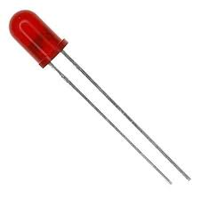
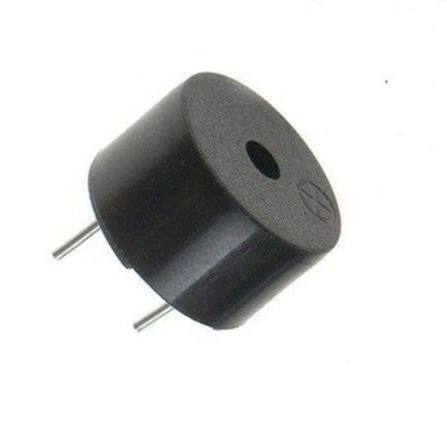
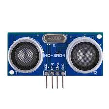
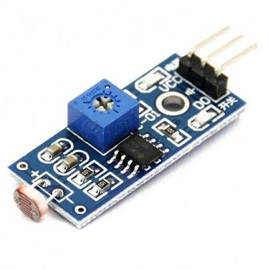
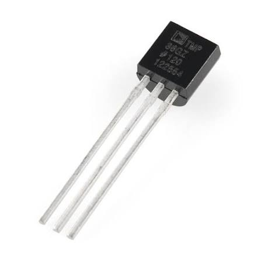
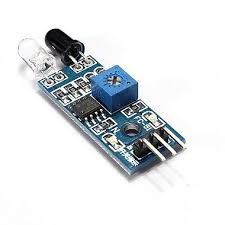

Os componentes de um robô são os elementos físicos e lógicos que permitem sua operação e funcionalidade. Eles incluem sensores, atuadores, microcontroladores e outros dispositivos eletrônicos.
Os atuadores são dispositivos que convertem sinais elétricos em movimento físico, permitindo que o robô interaja com o ambiente. Eles podem ser motores, servomotores, atuadores lineares, entre outros.


O LED é um dispositivo que emite luz quando uma corrente elétrica passa através dele.
O motor é um dispositivo que converte energia elétrica em movimento rotativo.
O servo é um motor com controle de posição, utilizado para movimentos precisos.
O buzzer é um dispositivo que emite som quando uma corrente elétrica é aplicada, sendo utilizado para alertas e sinais sonoros.
Os sensores são dispositivos que detectam mudanças no ambiente e enviam informações para o robô, permitindo que ele perceba e responda a estímulos externos. Eles podem medir luz, temperatura, distância, pressão, entre outros parâmetros.




O sensor ultrassônico utiliza ondas sonoras para medir a distância entre o sensor e um objeto.
O sensor de luz detecta a intensidade da luz ambiente, podendo ser utilizado para controlar iluminação ou detectar presença.
O sensor de temperatura mede a temperatura do ambiente ou de um objeto específico.
O sensor infravermelho detecta a presença de objetos ou pessoas através da emissão e recepção de radiação infravermelha.